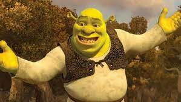
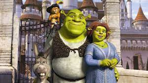

This is shrek
Shrek is one of the most amazing fairytail creatures to be invented. He is funny, cranky, careful, and perfers to live alone. Anyway, Shrek gets a bunch of fairytail creatures dumpeed into his swamp, then goes to free a princess so that lord farquad will take them away. Shrek delivers the princess to farquad, but finds out that he loves her, so he breaks into the castle to marry her before she marries lord farquad. When they kiss the princess, Fiona turns into an ogre After they get married prince charming gets mad because he was supposed to marry her, so when shrek turns himself and Fiona human because he thinks it will make her happy. Prince charming swoops in, pretending to be the human version of Shrek, so he can be married to fiona and rule the kingdom, but Shrek saves the day. Later, when Fiona's dad dies and he is next in line to the throne, he goes on a quest to find the second in line so he doesn't have to be king. With a few difficulties he succeds. 